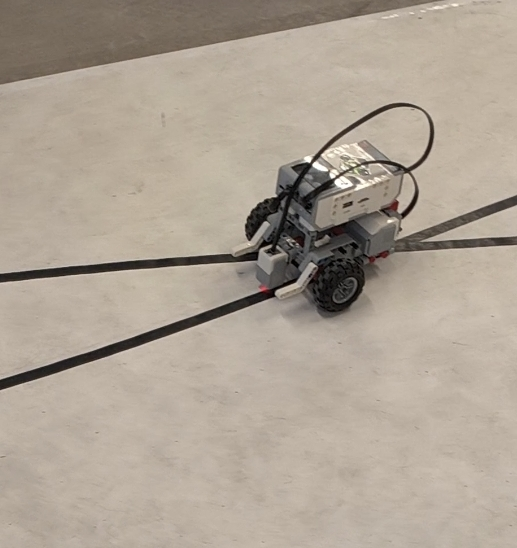

Lego prosjektet var en obligatorisk øving i faget IDATT1004, som jeg gjennomførte i Høst 2025
Rapport
Gruppeprosjekter Rally handlet om å programmere en legorobot til å utføre ulike øvinger.
Til slutt skulle det bli avholdt en konkurranse på en bane hvor de forskjellige gruppene
kunne konkurrere mot hverandre. Vår gruppe hadde som mål å ikke komme på sisteplass,
og det klarte vi med god margin, ettersom vi kom i kvartfinalen.
I løpet av gruppeprosjektet Rally, jobbet jeg som programvareansvarlig. Det vil si at jeg
fungerte som "lærer" og hjalp de andre på gruppa med programmering. Konseptet handlet om
at jeg selv skull programmere så lite som mulig, for å gi rom for de andre å lære,
ettersom jeg allerede har god kompetanse innenfor programmering. Likevel hjalp jeg til
når det trengtes, og kom med gode forslag og hjelp til koden. Igjennom prosjektet
lærte jeg mye om robot programmering, samtidig som jeg lærte mye om det å lære andre.
Jeg lærte også mye om samarbeid, og det er særlig viktig i jobbkontekst. Jeg lærte hvordan
å bruke ulike github i samarbeid med andre, og viktigheten av god kommunikasjon i gruppeprosjekter.
Dokumentasjon
Her kommer kildekoden til lego rally øvingene:
Øving 1:
from pybricks.hubs import EV3Brick
from pybricks.ev3devices import (Motor, TouchSensor, ColorSensor,
InfraredSensor, UltrasonicSensor, GyroSensor)
from pybricks.parameters import Port, Stop, Direction, Button, Color
from pybricks.tools import wait, StopWatch, DataLog
from pybricks.robotics import DriveBase
from pybricks.media.ev3dev import SoundFile, ImageFile
# This program requires LEGO EV3 MicroPython v2.0 or higher.
# Click "Open user guide" on the EV3 extension tab for more information.
# Create your objects here.
ev3 = EV3Brick()
left_wheel = Motor(port=Port.D)
right_wheel = Motor(port=Port.A)
robot = DriveBase(left_wheel, right_wheel, wheel_diameter = 82, axle_track = 124)
# Write your program here.
ev3.screen.draw_text(40,50,"Hello world!");
for i in range(4):
robot.straight(200)
robot.turn(90)
ev3.speaker.say("Have a nice day!")
Øving 2:
from pybricks.hubs import EV3Brick
from pybricks.ev3devices import Motor
from pybricks.ev3devices import TouchSensor
from pybricks.ev3devices import UltrasonicSensor
from pybricks.parameters import Port
import time
from pybricks import *;
from pybricks.robotics import DriveBase
# Initialize the EV3 Brick.
ev3 = EV3Brick()
# Initialize the motors.
left_motor = Motor(Port.A)
right_motor = Motor(Port.D)
# Initialize the drive base.
robot = DriveBase(left_motor, right_motor, wheel_diameter=55.5, axle_track=104)
ts = TouchSensor(Port.S2);
pressnum = 0;
us = UltrasonicSensor(Port.S4)
while pressnum == 0:
if(ts.pressed()):
pressnum += 1
ev3.speaker.say("Exercise 2")
time.sleep(1)
while pressnum == 1:
if(ts.pressed()):
pressnum += 1
elif(us.distance() < 300): robot.turn(30) else: robot.drive(200, 0) ev3.speaker.say("Exercise done")
Øving 3:
#Oppgavebeskrivelse:
#Finne sort linje ved bruk av fargesensor ved å snu mot klokka
#Når sort linje er funnet, kjør fremover
#Hvert 10. sekund, stopp og spill av tilfeldig underholdning
#Fortsett etter underholdning ferdig.
#Når alle 4 underholdningene er ferdige, kommer en hindring på banen.
#Stoppe 5-20 cm fra hindringen
#Spill av lyden "CHEERING" eller "FANFARE"
#Sudokode:
# Variabler:
# displayet = screen
# lydenheten = speaker
# fargesensor = cs
# standard_fart = 100
# tid = 0
# fargen sort = alt under rgb(50,50,50);
# Finne fargen sort:
#Funksjon som tar inn fargne til sensoren, output true eller false;
#Sjekk om fargen sensoren ser er lik eller mindre enn variabelen sort = rgb(50,50,50)
#returnere sann om fargen er under sort.
# Selve bevegelse:
# snu seg x grader mot venstre helt til sensor s finner fargen sort
# når sort er funnet, kjør fremover i fart y
# Tidssystem:
# programstart: Sett tid lik 0
# bruk tidsbiblioteket til å øke tiden med 1 hvert sekund
# hvis tid % 10 = 0:
# sett fart lik 0;
# stoppe tiden
# spill av tilfeldig underholdning (funksjon) via case switch
# vent til underholdning er ferdig
# fortsette tid
# sette fart til startfart
# underholdningssystem:
#1 funksjon per underholdning
#case random(0,3):
#0:
#funksjon_1()
#1:
#funksjon_2()
#2:
#funksjon_3()
#3:
#funksjon_4()
#Bibliotek
from pybricks.hubs import EV3Brick
from pybricks.ev3devices import Motor
from pybricks.ev3devices import TouchSensor
from pybricks.ev3devices import UltrasonicSensor
from pybricks.ev3devices import ColorSensor
from pybricks.parameters import Port
from pybricks.parameters import Button
from pybricks.media.ev3dev import ImageFile
#import python-ev3dev2.display
#import python-ev3dev2.sound.Sound as Sound
import random
from pybricks.media import *
import time
from pybricks import *;
from pybricks.robotics import DriveBase
from pybricks.media import *
# Variabler.
ev3 = EV3Brick()
liste = [0,1,2,3]
start_time = time.time()
cs = ColorSensor(Port.S2)
uss = UltrasonicSensor(Port.S3)
left_motor = Motor(Port.A)
right_motor = Motor(Port.B)
robot = DriveBase(left_motor, right_motor, wheel_diameter=55.5, axle_track=104)
RED = 10
GREEN = 10
BLUE = 20
DRIVE_SPEED = 50
rotation_speed = 70
# Funksjoner
def main():
start_time = time.time()
current_drive_speed = DRIVE_SPEED
while True:
(red,green,blue) = cs.rgb()
is_black = red < RED or green < GREEN or blue < BLUE print(is_black, cs.rgb()) current_time=time.time()
if(is_black==False): robot.drive(current_drive_speed, rotation_speed) else: robot.drive(current_drive_speed,
-rotation_speed) if current_time - start_time> 10 and len(liste) > 0:
tilfeldig_tall = random.choice(liste)
robot.stop()
if tilfeldig_tall == 0:
underholdning_1()
start_time = time.time()
elif tilfeldig_tall == 1:
underholdning_2()
start_time = time.time()
elif tilfeldig_tall == 2:
underholdning_3()
start_time = time.time()
else:
underholdning_4()
start_time = time.time()
liste.remove(tilfeldig_tall)
ev3.screen.clear()
current_drive_speed = DRIVE_SPEED
elif len(liste) <= 0: if(uss.distance() < 150): robot.stop() ev3.speaker.play_file("fanfare.wav") def
underholdning_1(): ev3.screen.clear() ev3.speaker.set_volume(100) ev3.screen.load_image("Tralalero.png")
ev3.speaker.play_file("tralaleroTheme.wav") def underholdning_2(): ev3.screen.clear()
ev3.speaker.set_volume(100) ev3.screen.load_image("Harald.png") ev3.speaker.play_file("nasjonalsangen2.wav") def
underholdning_3(): ev3.screen.clear() ev3.speaker.set_volume(100) ev3.screen.load_image("topgear.png")
ev3.speaker.play_file("topgearintro.wav") def underholdning_4(): ev3.screen.clear() ev3.speaker.say("vorfor
klager ikke matematikerene e fengsel?") time.sleep(5) ev3.speaker.say("De har sonet sin sin") #Hva kaller man en
falsk lasagne? En lasagneløgn main() #if(cs.color()==color.BLACK): # robot.drive(200,0)
Øving 4:
#!/usr/bin/env pybricks-micropython
from pybricks.hubs import EV3Brick
from pybricks.ev3devices import (Motor, TouchSensor, ColorSensor, InfraredSensor, UltrasonicSensor, GyroSensor)
from pybricks.parameters import Port, Stop, Direction, Button, Color
from pybricks.tools import wait, StopWatch, DataLog
from pybricks.robotics import DriveBase
from pybricks.media.ev3dev import SoundFile, ImageFile
import time
# Oppgavebeskrivelse: Øving 4 rally bil som skal kunne følge en svart linje gjennom en bane.
# Denne roboten skal konkurrere mot andre lag sine roboter.
# Forslag til kjøring: While: sensor er dekket av svart, if og else som styrer
# fordeler er krysning, fart og stabilitet
# Dårlige sider er vasnkelig å definere når den skal til venstre eller høyre, hva skjer hvis den blir dyttet unna
# Dobbel sensor som kjører riktig når ting er hvitt og justerer etter hvilken sensor som ser svart, når
kryssningspunktet nås så kommer
# en if statement inn som ligger først i while løkken som får maksinen til å kjøre
#Red = 10
#Green = 10
#Blue = 20
#Ny plan:
#Sjekker turnraten for å finne ut av om sving er krapp eller ikke
#På denne måten kan vi definere logikk utifra hvilken type sving roboten kjører i.
#Begrunnelsen for dette er fordi vi ser at svingen der krysningspunktet er i, er mindre krapp enn vanlige svinger.
#Ved å derfor skape en algoritme for å finne ut av hvor krapp sving bilen er i, kan vi finne strekningen
#med krysningspunktet.
#Når vi finner riktig strekning, må vi definere egen logikk slik at botten ikke skifter fil.
#Krapp sving og rett strekning: Kjør vanlig, følg sort og snu deretter.
#turnrate mellom rett strekning og krapp sving: custom logikk
#Custom logikk kan være at man hindrer botten å svinge mer enn den mindre krappe svingen(strekningen)
#Dette gjør at botten ikke vil bytte fil ettersom det hadde krevd en stor sving.
#Knusmodus:
#Dersom sensoren ikke finner sort innen et gitt tidsintervall (5 sekunder) (bruk time modul)
#aktiveres knusmodus. I knusmodus vil følgende ting skje:
# - Bilen vil kjre tilfeldig rundt uavhengig av sensoren
# - Drillen vil kjøre kjappere
# - Roboten vil si noe for å deklarere at knusmodus er aktivert
#Knusmodus fungerer altså som en plan b dersom bilen havner utenfor banen. Håpet er da at bilen klarer å sabotere.
#Data:
#Hvit turnrate: 10-20 (ca. 15.6)
#Sort turnrate: -35 - -40 (ca. -44.4)
color_sensor1 = ColorSensor(Port.S1)
left_motor = Motor(Port.A)
right_motor = Motor(Port.D)
drill_motor = Motor(Port.C)
distanceTreshHold = 100
drivespeed = 150
rotationspeed = 70
black = 11
white = 90
threshold = (black + white) / 2
turn = 1.2
drill_motor.run(10000)
rallybase = DriveBase(left_motor, right_motor, wheel_diameter=70, axle_track=150)
x_data, y_data = list(), list()
changeOfTurnRate = 0
def clamp(value, min_value, max_value):
return max(min_value, min(value, max_value))
prev_turn_rate = 0
class rally():
def _init_(self):
ev3 = EV3Brick()
def program(self):
deviation = color_sensor1.reflection() - threshold
turn_rate = turn*deviation
#changeOfTurnRate = turn_rate-prev_turn_rate
prev_turn_rate = turn_rate
#print(color_sensor1.reflection(), deviation)
#print(turn_rate)
rallybase.drive(drivespeed, -clamp(turn_rate, -20, 40))
#def knus(self):
# if(uss1.distance < distanceTreshHold or uss2.distance < distanceTreshHold): # isOneCloser=uss1.distance <
uss2.distance # if(isOneCloser): # rallybase.drive(drivespeed, -turn_rate) # else: # rallybase.drive(drivespeed,
turn_rate) def run(self): while True: self.program() #while True: # self.knus() rallybot=rally() rallybot.run()
All koden er skrevet i python, ettersom vi brukte ev3dev biblioteket fra Lego education